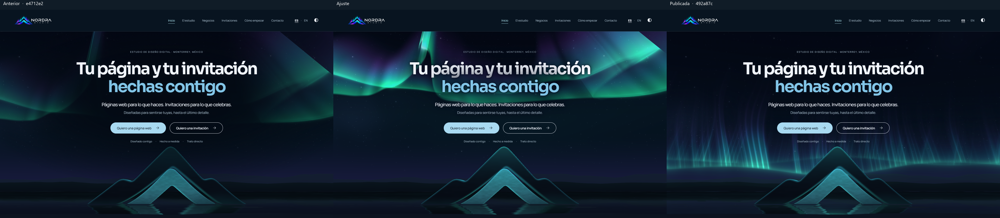
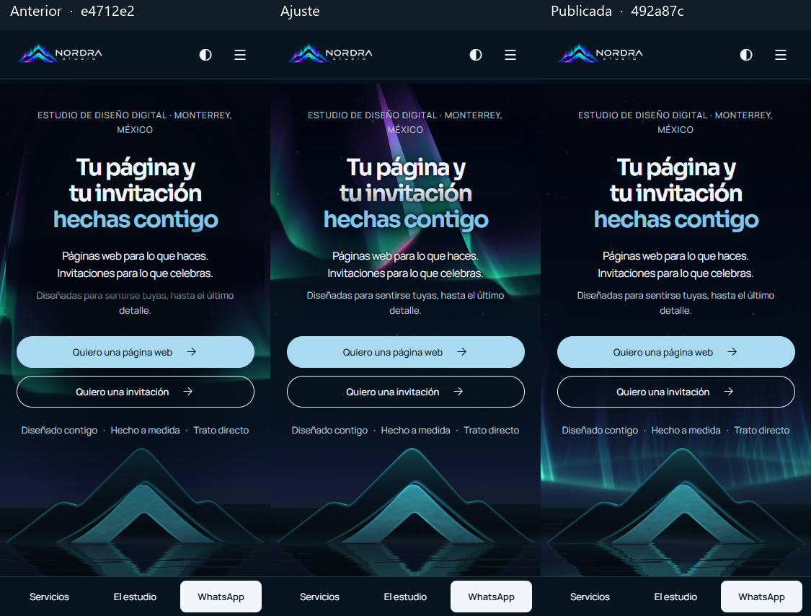
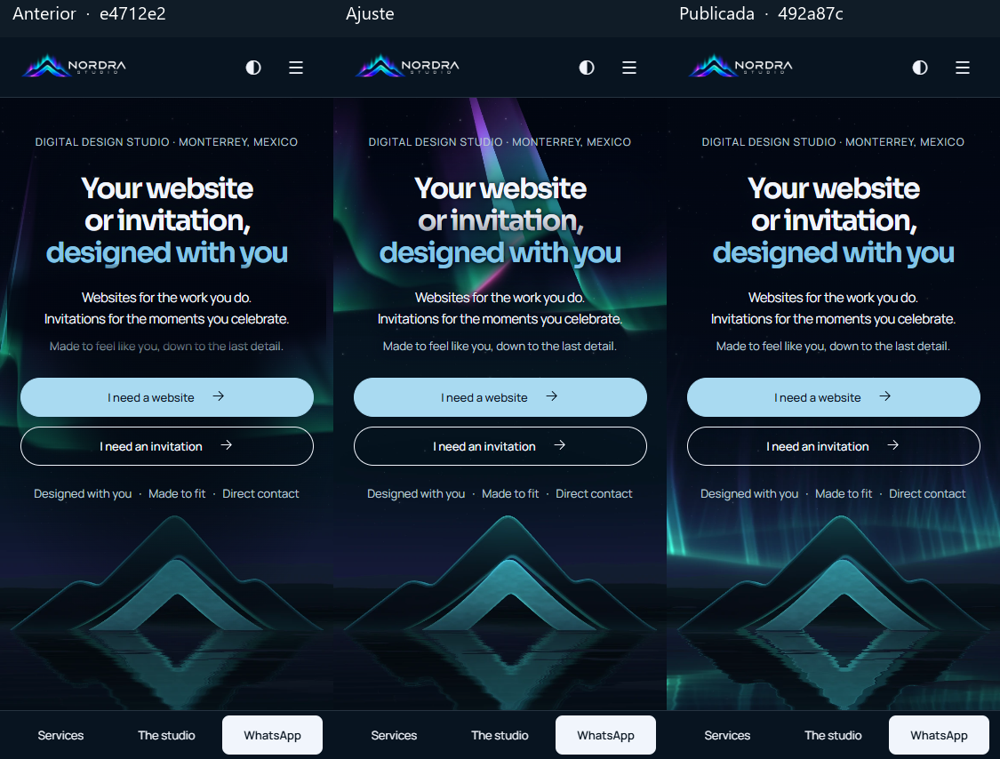

Se eliminó la máscara de emisión del centro de la escena. Las dos cintas se elevaron juntas conservando sus pliegues. La protección sigue las líneas reales de texto y el retrato móvil conserva un pliegue iluminado en el centro. El paisaje claro es el mismo. Se conservaron la tinta clara y los botones.
Orden de izquierda a derecha: e4712e2, ajuste y 492a87c. En escritorio las tres escenas tienen el mismo reloj (60 s) y el mismo pulso centrado al 100 %. Cada teléfono muestra su póster real. Toca cualquier comparativa para ampliarla.



Mínimo por elemento entre los píxeles interiores de los glifos. En oscuro de escritorio se fijó la amplitud en 1 para trece instantes de deriva y cinco posiciones del centro entre −55 y +55 (65 combinaciones por idioma). El texto se ocultó manteniendo sus sombras para muestrear el fondo del mismo fotograma. En teléfono se midió el póster final servido y en claro la aurora no emite luz. El mínimo de los botones incluye los dos CTA.
| Vista | Titular | Acento | Subtítulo | Detalle | Botones |
|---|---|---|---|---|---|
| ES · 1440 · oscuro | 5.01 | 4.78 | 10.36 | 9.34 | 12.36 |
| ES · 1440 · claro | 11.93 | 4.62 | 11.56 | 4.76 | 11.43 |
| ES · 375 · oscuro | 6.50 | 6.45 | 6.23 | 9.43 | 12.36 |
| ES · 375 · claro | 11.62 | 4.53 | 11.45 | 4.70 | 12.13 |
| EN · 1440 · oscuro | 6.22 | 5.66 | 10.05 | 9.06 | 12.36 |
| EN · 1440 · claro | 11.93 | 4.62 | 11.56 | 4.76 | 11.43 |
| EN · 375 · oscuro | 9.24 | 5.80 | 6.65 | 11.32 | 12.36 |
| EN · 375 · claro | 11.73 | 4.54 | 11.60 | 4.92 | 12.28 |
Valores sin redondear y ubicación de los mínimos.
Chrome local a 1440 × 900. El p95 de la escena completa, incluido el reflejo, fue de 8.8 ms en e4712e2 y 8.0 ms tras el ajuste. La frecuencia pasó de 60.0 a 60.0 fps; 240 cuadros por versión, con lectura de un píxel para sincronizar la GPU. Las siete texturas y los cuatro pósteres de teléfono pesan 441,876 B en total frente a 504.304 B en 492a87c (-12.4 %). Medición por cuadro.
Pasaron typecheck, npm test, build y check:build. En ES y EN se comprobó la pausa, la reanudación, el movimiento reducido y la parada al salir el hero de la pantalla.